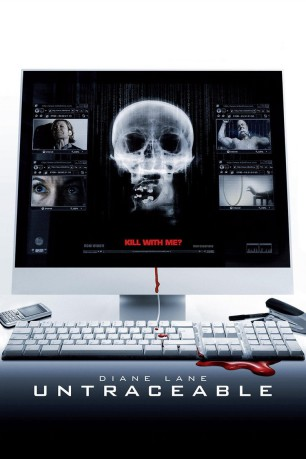

#1030 Untraceable
 
 IMDB-Wertung: 6.2 / 10
IMDB-Wertung: 6.2 / 10  Metascore: 32
Metascore: 32 
Im Krieg gegen die Online-Kriminalität steht die FBI-Spezialistin Jennifer Marsh an vorderster Front. Hat sie einen Verbrecher erst mal auf dem Schirm, lässt sie ihn nicht mehr entkommen. Doch diesmal wird aus der Jägerin die Gejagte, als ein erbarmungsloser Gegner sie in ein grausames Katz-und-Maus-Spiel zwingt. Auf der Website www.killwithme.com lädt ein High-Tech-Serienmörder ein, dem Todeskampf seiner Gefangenen beizuwohnen, und macht die Besucher seiner Internetseite gleichzeitig zu Mittätern. Je mehr Menschen auf die Seite klicken, umso schneller stirbt das Opfer. Alle Versuche den sadistischen Psychopathen aufzuspüren, laufen ins Leere. Er scheint jeden Trick zu kennen und ist Jennifer und ihrem Kollegen Cross immer einen Schritt voraus. Nicht nur das - er dreht den Spieß um und bedroht auf einmal Jennifer und ihre kleine Tochter und erhöht damit noch den Einsatz in diesem packenden Wettlauf gegen die Zeit.
Jahr: 2008
Dauer: 101 Minuten
FSK: 16
Land: USA Studio: Screen GemsTonspuren: DTS - ,
Untertitel:
Auflösung: 1080p (1920x800) Größe: 5498 MB
Genre: Krimi, Horror, Mystery, Thriller
Regisseur: Gregory Hoblit
Drehbuch: Robert Fyvolent, Mark Brinker, Allison Burnett, Robert Fyvolent, Mark Brinker
Soundtrack: Christopher Young
Darsteller:
 Diane Lane als Jennifer Marsh
Diane Lane als Jennifer Marsh Billy Burke als Detective Eric Box
Billy Burke als Detective Eric Box Colin Hanks als Griffin Dowd
Colin Hanks als Griffin Dowd Joseph Cross als Owen Reilly
Joseph Cross als Owen Reilly Mary Beth Hurt als Stella Marsh
Mary Beth Hurt als Stella Marsh Peter Gray Lewis als Richard Brooks
Peter Gray Lewis als Richard Brooks- Tyrone Giordano als Tim Wilks
 Perla Haney-Jardine als Annie Haskins
Perla Haney-Jardine als Annie Haskins Tim DeZarn als Herbert Miller
Tim DeZarn als Herbert Miller Christopher Cousins als David Williams
Christopher Cousins als David Williams- Jesse Tyler Ferguson als Arthur James Elmer
- Brynn Baron als Mrs. Miller
- John Breen als Richard Weymouth
 Erin Carufel als Melanie
Erin Carufel als Melanie- Gray Eubank als Ray
- Dax Jordan als Scotty Hillman
- Betty Moyer als Assistant
 Mike Smith als SWAT #1
Mike Smith als SWAT #1- Gabby Brooks als Girl at birthday party , uncredited
- Todd A. Robinson als FBI SWAT Team , uncredited
- Trina Adams als Female Cop #3
 Dan Callahan als Trey Restom
Dan Callahan als Trey Restom- Ryan Deal als Cop #1
- Marilyn Deutsch als National Newscaster #1
- Pete Ferryman als Daytime Newscaster #1
- David Freitas als Five O'Clock Newscaster #1
- West A. Helfrich als Cop #2
- Zack Hoffman als Chief of Police Michael Bagley
- Sarah Brillhart als Daughter of Mrs. Miller
- Diana Brillhart als Daughter of Mrs. Miller
- Ryan Hopkins als Acne-Faced Kid
- Len Huynh als Tom Park
- Jim Hyde als National Newscaster #2
- Daniel Liu als Detective Tom Moy
- Kimberly Maus als Five O'Clock Newscaster #2
- Kirk Mouser als FBI Agent Carter Thompson
- Katie O'Grady als Portland Reporter #2
- Jamal N. Qutub als Young Stoner
- Kerry Tomlinson als Daytime Newscaster #2
- David Wilson als Portland Reporter #1
- Kevin Dahlgren als FBI agent , uncredited
- Mona Jiveh als Maid , uncredited
- Jeff Mills als FBI Agent , uncredited
- Hollie Olson als DEA Agent , uncredited
- Alan Winston als FBI Agent , uncredited
Datei: X:\2008(N-Z)\Untraceable (2008, FSK16, 1920x800).mkv seit 08.05.2015
Festplatte: HD 2008(G-Z)-2009(A-F)
 Es gibt insgesamt 91 Filme in der Gruppe '2008(N-Z)'
Es gibt insgesamt 91 Filme in der Gruppe '2008(N-Z)'